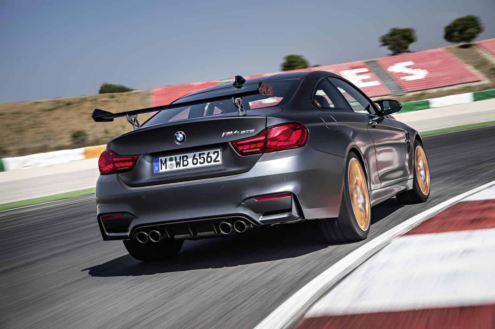

Quand la sportivité atteint la perfection
M4 GTS : L'excellence sportive, taillée pour la piste et homologuée pour route

La BMW M4 GTS incarne l'aboutissement de la sportivité signée BMW M.
Produite en série limitée à 700 exemplaires, elle se distingue par son allure radicale : lignes sculptées, aileron arrière réglable, splitter avant et jantes spécifiques.
Chaque détail est pensé pour l'efficacité aérodynamique et la performance, tout en affirmant une identité visuelle unique.